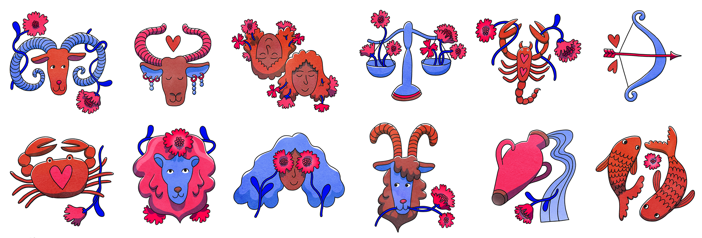
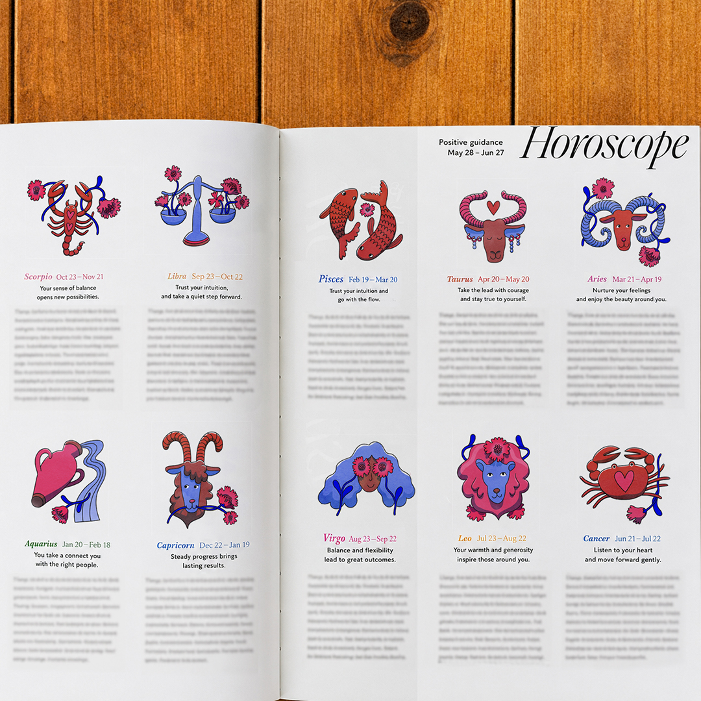
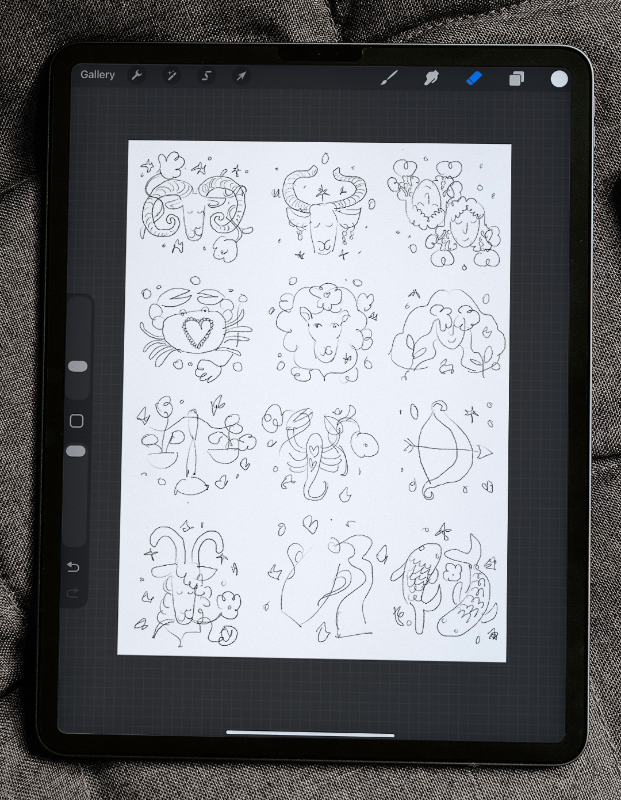

Illustrations of the twelve zodiac signs, intended for use in a magazine horocope feature.
I used a 'magical' shade of blue combined with red tones to create an interesting contrast. Rounded, wavy shapes give the illustrations a joyful and friendly feel, while the recurring flowers and consistent color palette help unify the series.
I used a 'magical' shade of blue combined with red tones to create an interesting contrast. Rounded, wavy shapes give the illustrations a joyful and friendly feel, while the recurring flowers and consistent color palette help unify the series.

Initial sketches for the illustrations.
I ended up removing the sparkles and decorative details to create clearer compositions and more visually interesting shapes.
I ended up removing the sparkles and decorative details to create clearer compositions and more visually interesting shapes.
Let’s work together!
Send me a creative brief along with your budget and project timeline.